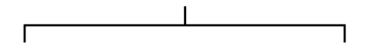

Description:
This element allows data entry from measurements made with the Hertel exophthalmometer. In edit mode, the numeric data is linked to the diagrammatic scheme on the right hand side. Data can be entered either by typing the numbers into the text boxes, or by using the mouse to manipulate the eyes in the diagram. The data and the diagram are linked so that changes in one are reflected in the other in real time.
Status: Alpha
Edit mode:

Display mode:
110
16
25
Steering Group:
Adnexal